Pets, owners, and rules, written as Peewee models
Gregory S. DeLozier, PhD
| Layer | Job |
|---|---|
| Browser | Fast feedback |
| Web application | Reliable movement of data |
| Database layer | Data follows the rules: Python checks, then the table |
Handle the error at every layer we can.
| The file | Result |
|---|---|
| Missing | Empty current tables |
| Has the rules the check looks for | No change |
| Older layout | New tables, data reloaded, original kept |
python3 -m pip install -r requirements.txt
python3 upgrade_database.py
flask run
python3 -m unittest -vhttp://127.0.0.1:5000/list
Create an owner first.
class Pet(BaseModel):
name = TextField(null=False, constraints=[
Check("length(trim(name)) > 0")])
type = TextField(null=False, constraints=[
Check("length(trim(type)) > 0")])
age = IntegerField(default=0, constraints=[
Check("age >= 0")])
owner = ForeignKeyField(Owner, backref="pets",
null=False, on_delete="RESTRICT")CREATE TABLE "pet" (
"id" INTEGER NOT NULL PRIMARY KEY,
"name" TEXT NOT NULL CHECK (length(trim(name)) > 0),
"type" TEXT NOT NULL CHECK (length(trim(type)) > 0),
"age" INTEGER NOT NULL CHECK (age >= 0),
"owner_id" INTEGER NOT NULL,
FOREIGN KEY ("owner_id")
REFERENCES "owner" ("id") ON DELETE RESTRICT
)Read it with sqlite3 pets.db .schema.
loaded 1 owners and 2 pets
2 pets had no owner: now 'Unassigned'
not carried over: food
skipped pet 4: CHECK constraint failed: age >= 0
original file kept as pets.db.before-upgradeRows that break a rule are listed, not hidden.
| Argument | Effect |
|---|---|
Owner |
Which table |
null=False |
Every pet has an owner |
on_delete="RESTRICT" |
Owner with pets cannot go |
backref="pets" |
owner.pets |
pet.owner_id is an integer. pet.owner is an
Owner.
db.init(database_file,
pragmas={"foreign_keys": 1})
...
fk = db.execute_sql(
"PRAGMA foreign_keys").fetchone()[0]
assert fk == 1The setting belongs to the connection.

| Request | Browser | Route | database.py |
Table |
|---|---|---|---|---|
| Blank name | required |
yes | ValueError |
CHECK |
Age -1 |
min="0" |
yes | ValueError |
CHECK |
Age abc |
number |
yes | ValueError |
not stopped |
| No owner | required |
yes | ValueError |
NOT NULL |
Owner 999999 |
dropdown | passes it on | passes it on | FOREIGN KEY |
| Delete owner with pets | none | reports | passes it on | RESTRICT |
Blank age is still 0. Bad input is no longer turned into
0.
except IntegrityError as e:
return error_page("Error: Cannot delete this "
"owner because they have pets.", 400)Routes now depend on Peewee. Is that acceptable?
| Three pets | Queries |
|---|---|
No join, pet.owner.name |
4 |
| With join | 1 |
| Step | Result |
|---|---|
| Delete Alex, pets remain | Rejected |
| Move one pet to Sam | Alex still has one |
| Move the other | Alex has none |
| Delete Alex | Succeeds |
Second insert fails: neither pet is stored.
Skip the helper. Does the table still refuse?
Same name, different cities?
Same name, same city?
Same name, no city?
Which layers should know?
Browser: tell them now.
Route: explain the failure.
Database layer: never store a broken row.